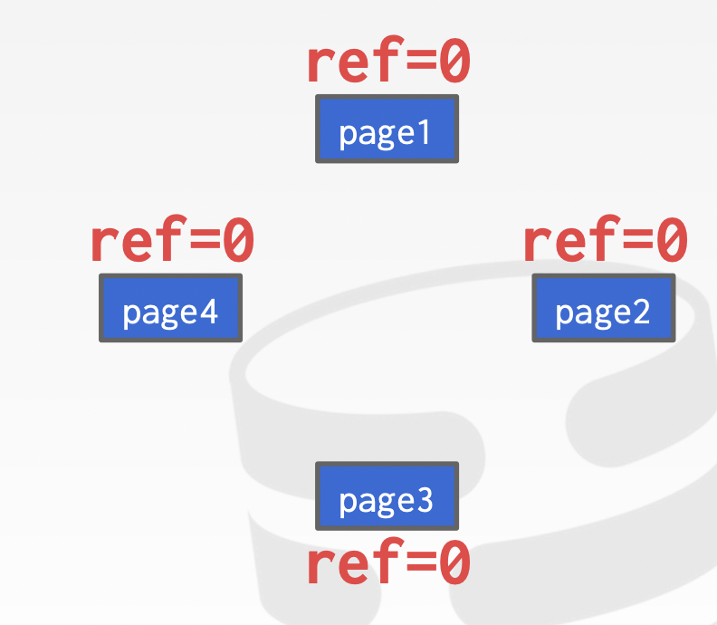

DBMS的缓存设计
Problem #2: How the DBMS manages its memory and move data back-and-forth from disk.
主要研究数据在内存和磁盘间的置换策略
主要从空间和事件两个角度去考虑数据的移动
- 空间
- 数据应该写在磁盘的何处
- 磁盘读取的数据应该写在哪个page上
- 时间
- 何时从磁盘中读取数据，何时又将数据写入到磁盘中
Buffer Pool Manager
Buffer Pool：内存中的缓存池，用于存储磁盘中读取的数据
Buffer-Pool中含有多个frame，每个frame用于存放一个page（类比page中每个slot对应存放一个tuple）

通过查询page table（注意区分page directory）可以找到page在buffer pool中的存储位置，
每一个page又对应一组metadata，包含：
- Dirty Flag：数据是否发生了更新
- Pin/Reference Counter：数据的使用情况，引用计数
通过latch实现并发控制
latch和lock的区别，在DBMS中，lock指的是数据库中高层语义逻辑上的锁
latch对应系统调用中的锁，如mutex
Buffer Pool的优化策略
Multiple Buffer Pools
系统内同时有多个buffer pool，从而更好地应对并发情况。
如果使每个buffer pool对应一个table，则对应不同特征的table数据可以选择不同的控制优化策略
Pre-Fetching
DBMS存储由于OS内置存储的实例，因为DBMS知道语句的行为是什么，于是能够按照最优的策略预读取数据

Scan Sharing
多个线程同时读取buffer pool中的数据时，通过scan sharing策略能够使多个线程共享已读入内存的数据
其与result caching的区别在于，result caching只是对相同的query缓存执行结果
而scan sharing不要求query相同，只需要query之间读取了相同的数据，即按照相同的逻辑读取数据
Buffer Pool Bypass
The sequential scan operator will not store fetched pages in the buffer pool to avoid overhead.
对于一些扫描操作，并不会将数据存储到buffer pool中，而是直接存储到内存中
OS Page Cache
由于OS含有page cache这种内部的缓存机制，因此当数据从磁盘被加载到内存上时，会自动被page cache缓存，同时也会在buffer pool中放一份，这样就造成了数据的冗余，因此大部分DBMS使用direct I/O（O_DIRECT）去取消page cache机制，完全由DB管理内存（Postgres除外）
Replacement Policies
When the DBMS needs to free up a frame to make room for a new page, it must decide which page to evict from the buffer pool.
对于数据置换策略，即当没有空余frame时，应该替换buffer pool中哪一个page？
原则：
- Correctness
- Accuracy
- Speed
- Meta-data overhead：尽可能减少meta-data的使用
LRU
LRU：LEAST-RECENTLY USED
LRU的一种近似实现：CLOCK，优点在于不用维护每个page的timestamp
通过一个reference bit表示该page是否被引用过
- 每当需要发生交换时检查page的ref bit是否为1
- 若为1，则将其设置为0，检查下一个page
- 若为0，则驱逐该page，进行交换
LRU的缺点在于，不适应“sequential flooding”的情况
- A query performs a sequential scan that reads every page.
- This pollutes the buffer pool with pages that are read once and then never again.
在这种情况下，最近读入的page反而是最不需要的page，而LRU对应的page却很可能被其他顺序读取的query读取到，因此就需要其他的置换策略。